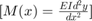

Connor McGarty, cmcgarty - HW2 P2.26 from Chapra Text
File: EE254_cmcgarty_HW2_2_26.m
Date: Submitted Thursday, January 30, 2020 - 1/30/20
Problem 2.26: Figure P2.26a shows Uniform beam subject to a linearly increasing distributed load. As depicted in Fig. P2.26b, deflection (m) can be computed with where  the modulus of elasticity and the moment of inertia . Employ this equation and calculus to generate MATLAB plots of the following quantities versus distance along the beam:
the modulus of elasticity and the moment of inertia . Employ this equation and calculus to generate MATLAB plots of the following quantities versus distance along the beam:
- displacement
- slope
- moment 
- shear , and
- loading .
Use the following parameters for your computation. , and . Employ the subplot function to display all the plots vertically on the same page in order.
Contents
Parameters
clear;clc;close all; modulus_of_elasticity = 50000; % kN/cm^2 moment_of_inertia = 30000; % cm^4 length = 600; % cm w_0 = 2.5; % kN/cm x_delta = 10; % cm x_init = 0;
Solution
x_vector = [x_init : x_delta : length]; % independent variable % coefficient for all quantities coefficient = (w_0 ./ (120 .* modulus_of_elasticity .* moment_of_inertia .* length)); displacement_vector = coefficient .* ((0-(x_vector.^5)) + (2.*(length.^2).*(x_vector.^3)) - ((length.^4).*x_vector)); % first derivative of displacement vector slope_vector = coefficient .* ((-5.*(x_vector.^4)) + (2.*2.*(length.^2).*(x_vector.^2)) ... - length.^4); % first derivative of slope vector, 2nd derivative of displacement vector moment_vector = (coefficient .* modulus_of_elasticity .* moment_of_inertia) .* ... ((4.*-5.*x_vector.^3) + (2.*2.*2.*(length.^2).*x_vector)); % first derivative of moment vector, 3rd derivative of displacement vector % (with additional coefficient that reduces out I and E) shear_vector = (coefficient .* modulus_of_elasticity .* moment_of_inertia) .* ... ((3.*4.*-5.*(x_vector.^2)) + (2.*2.*2.*(length.^2))); % first derivative of shear vector, 4th derivative of displacement vector % (with additional coefficient that reduces out I and E and negates as % well) loading_vector = -1 .* (coefficient .* modulus_of_elasticity .* moment_of_inertia) .* ... ((2.*3.*4.*-5.*x_vector)); subplot(5,1,1); plot(x_vector, displacement_vector); xlabel('Position along length of beam (cm)'); ylabel('Displacement (y)'); subplot(5,1,2); plot(x_vector, slope_vector); xlabel('Position along length of beam (cm)'); ylabel('Slope (\theta(x))'); subplot(5,1,3); plot(x_vector, moment_vector); xlabel('Position along length of beam (cm)'); ylabel('Moment (M(x))'); subplot(5,1,4); plot(x_vector, shear_vector); xlabel('Position along length of beam (cm)'); ylabel('Shear (V(x))'); subplot(5,1,5); plot(x_vector, loading_vector); xlabel('Position along length of beam (cm)'); ylabel('Loading (w(x))');